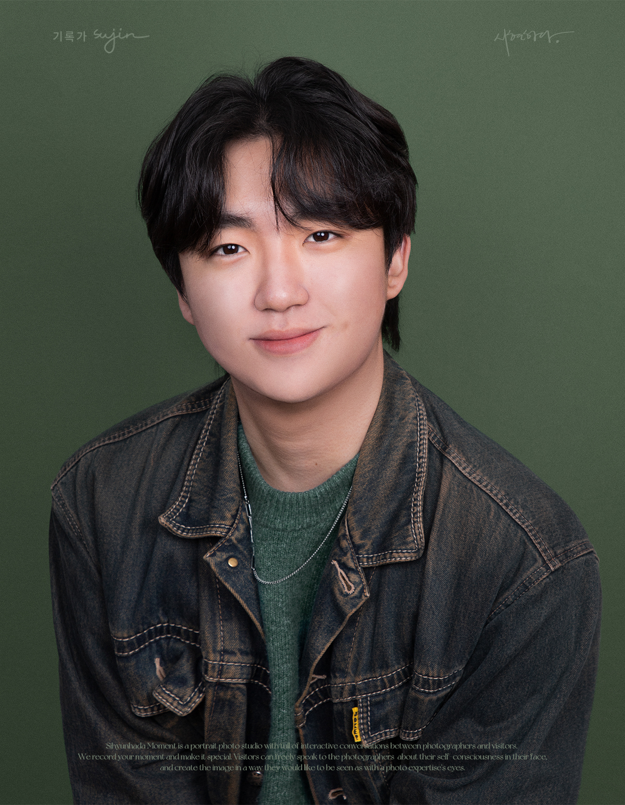
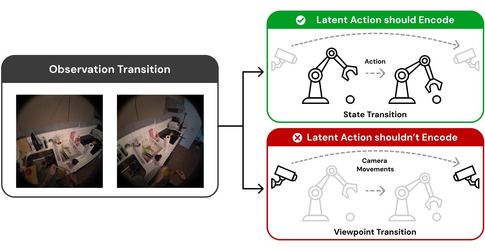
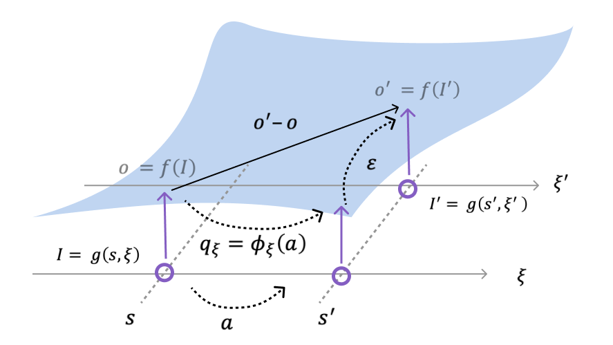

Jung Min LEE (이정민)
Seoul National University

About
Hi! I'm Jung Min from 🇰🇷. I'm a second-year M.S. student at Cognitive Machine Learning Laboratory, advised by Prof. Jung Woo Lee, in the Department of Electrical and Computer Engineering at Seoul National University (SNU). I am a Research Intern at Physical Intelligence Lab., LG AI Research. I received my B.S. in Physics from SNU. Currently, I am collaborating closely with Li Zhao at Microsoft Research.
Research Keywords
How to solve real-world problems with generalized intelligence
AI has demonstrated strong performance over the past five years, yet it remains an open question whether AI can reliably solve real-world problems. To address this gap, I believe the most important capability AI must achieve is generalized intelligence.
With this goal in mind, I am currently focusing on data scaling for real-world agents. Data scaling is one of the most effective paths toward generalized intelligence, but it remains challenging in real-world settings. My work aims to develop new methods to scale real-world agent data and, ultimately, enable foundation-model-level generalized intelligence.
News
Education
Selected Publications
-

-

Publications
- May 2026
- Apr 2026
- Oct 2025
- 2025
- 2025
- 2025
Experience

M.S. Student, Electrical and Computer Engineering
Seoul National University
- Researching robot foundation models: VLA pretraining, latent action learning, and scaling manipulation policies from web-scale video.
- First-authored MVP-LAM (ICML 2026) and “Why Latent Actions Fail, and How to Prevent It.”
- Collaborating with Li Zhao (Microsoft Research) under Prof. Jung Woo Lee.
Research Intern
LG AI Research — Physical Intelligence Lab.
- Building robot foundation models for real-world manipulation.
- Scaling vision-language-action model from large-scale video data.
- Bridging web-scale pretraining and physical robot deployment.
Open Source
IsaacSim-Franka ⭐ 18
- Custom Reinforcement Learning environment using the Franka Panda arm.
- Visuomotor control: Soft Actor-Critic (SAC) agent with single RGB image as observation.
- 4 manipulation tasks: Reach, Push, Lift, Pick-and-place.